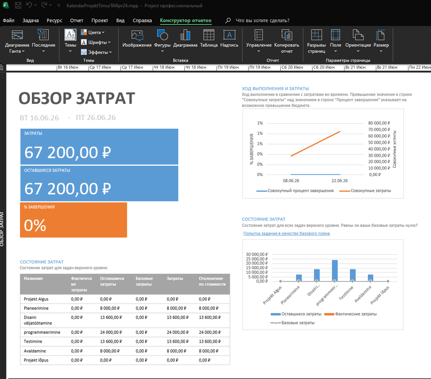

Diagrammide ja visuaalsete aruannete loomine
Visuaalsed graafikud ja diagrammid on parim viis projekti seisukorra, eelarve ja ajakava esitlemiseks sidusrühmadele ja meeskonnale.
Visuaalse aruande genereerimine (Cost Overview)
Liigu vahekaardile Report ja vali soovitud aruande mall (nt Costs -> Cash Flow või Dashboard -> Project Overview). MS Project koostab automaatselt dünaamilise raporti.
Alloleval pildil on näha reaalne kuluülevaade (Kulude ülevaade), kus kuvatakse projekti kogukulud (67 200 ₽), järelejäänud eelarve ning mugavad tulp- ja joondiagrammid ülesannete lõikes.
